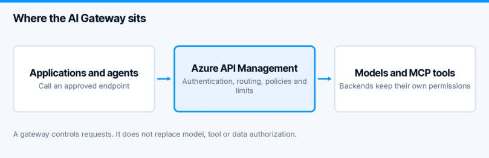
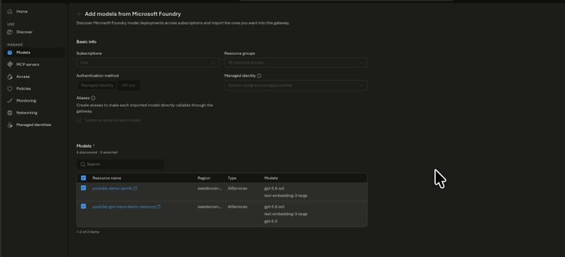
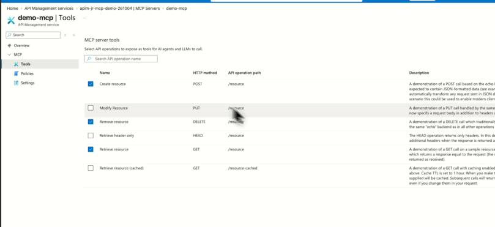
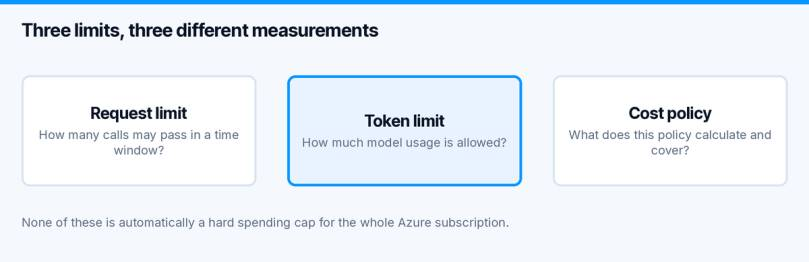

One application calls a Foundry model directly. Another has its own API key. A third agent connects to an MCP server. Each works, but each also introduces another place to manage access, limits and monitoring.
An Azure AI Gateway can give these callers a common entry point. In this walkthrough, I use Azure API Management to look at Foundry model integration, MCP tools and the newer gateway experience. I also separate what the portal lets us configure from what a real client test still needs to prove.
Watch the video walkthrough (German)
Where the Azure AI Gateway sits
AI gateway capabilities are part of Azure API Management. They are not a replacement for the model deployment or the tool backend. Microsoft’s AI gateway overview describes capabilities such as routing, token controls, caching and monitoring, with availability varying by feature and tier.

The gateway sits between callers and the services they use. That gives you a place to apply shared policies and observe requests. The backend still needs its own authorization. Passing through a gateway should not give an agent unrestricted access to every tool or data source behind it.
If you want a deeper look at the governance boundary, my earlier API Management and MCP control-plane guide covers that angle. This article follows the model and MCP configuration shown in my newer recording.
Choose the service tier before following the portal steps
Start with a development resource, fictional data and one model deployment you can test safely. You need permission to configure API Management and the Foundry resource, plus the appropriate access for the gateway’s backend identity.
Do not pick a tier only because its headline price looks attractive. The MCP integration demonstrated here is not available in the Consumption tier. Check the tier list and limitations in Microsoft’s existing MCP server integration guide.
Developer is intended for development and testing and has no production SLA. For a production design, compare supported features, capacity and networking requirements in the APIM pricing and tier information.
I deliberately avoid a fixed monthly figure here. The amount shown in a demo depends on region, currency, tier and pricing at that time. Your estimate should include the gateway, model usage and any extra services such as a cache or monitoring destination. A budget alert is useful, but it is not the same as a hard spending stop.
Import Foundry models and check the backend identity
In the recording, I first explore the classic API Management experience, then the newer AI gateway interface marked as preview. The model-import wizard discovers Foundry deployments and offers an authentication choice.

Actual frame from the recording: the Foundry import wizard, not a reconstructed interface.
Selecting managed identity in a wizard is not the final access check. Verify that the intended identity has the required rights on the correct backend, then send a request through the gateway. Also check whether a caller can still bypass the gateway by calling the model endpoint directly.
I would document these three values next to each other: the client-facing endpoint, the gateway identity and the backend deployment. It makes a later failed request much easier to investigate.
Use model aliases without assuming automatic failover
The newer interface also shows model aliases. A stable client-facing name can make it easier to change a backend without changing every application.
But an alias is not evidence of automatic failover, load balancing or identical model behaviour. In the recording, I create and inspect an alias. I do not demonstrate a backend outage and successful fallback.
For a real change, compare the candidate model’s output, tool calls, latency and token usage on representative tasks. Then change the mapping in a controlled rollout. Keep a known-good mapping available for rollback. A technically valid response is not enough if the new model breaks the workflow.
Two different ways to put MCP behind API Management
Connect an existing MCP server
This keeps the MCP server as the backend and introduces API Management as an entry point. You need to consider authentication in both directions: client to gateway, and gateway to MCP server. Microsoft explains that distinction in its MCP security guidance.
The connection attempt in my recording does not complete successfully. I therefore do not present it as a working end-to-end integration. A portal entry or catalog selection is not enough to prove the backend can be reached.
The other path uses an existing REST API. In the demo, I select operations from the Echo API and expose them as tools. The resulting list makes the scope of the interface visible.

Start with a small read-only surface. Check operation names, descriptions, input schemas and backend permissions before adding write actions. The REST-to-MCP documentation describes the supported setup.
The recording shows tool selection, not a completed MCP client invocation. Your next test should call an allowed tool and attempt an operation outside the intended scope. Do not assume that a reduced tool list alone removes all other paths to the REST backend.
Azure AI Gateway Limits: Requests, Tokens and Costs
The gateway interface brings several controls together. They still measure different things:

| Control | Question it answers | What I would check |
|---|---|---|
| Request rate limit | How many calls can this caller make in a window? | The counter key and the response when the threshold is crossed |
| Token limit | How much model usage is allowed? | Token accounting, supported backend and streaming behaviour |
| Cost-related policy | Which usage does this policy measure? | Its pricing assumptions, scope and reset behaviour |
None of these automatically becomes a hard spending cap for the entire Azure subscription. A shared counter can also let one application consume another application’s allowance. Choose the counter boundary deliberately and test two different callers.
Caching and content safety need their own tests
I explore semantic caching and content-safety options in the portal. In the recorded setup, both options are disabled before the configuration is created. There is no demonstrated cache hit or blocked unsafe response in this episode.
Before enabling a cache, decide what may be stored, which identities may share entries and how changes invalidate earlier results. Similar prompts from different users can have different authorization contexts. A cache that ignores that boundary can undermine an otherwise careful design.
For content safety, test the configured categories and thresholds with controlled inputs. Treat those results as one control, not as proof that the agent cannot leak data or perform an unauthorized action.
My acceptance tests for a gateway pilot
These are the tests I would run next. They are recommendations, not results from the recording:
- Send an allowed model request through the gateway and find its corresponding monitoring record.
- Send a request with missing or invalid credentials and confirm rejection under the chosen authentication design.
- Use a valid identity without access to the intended resource and confirm that the request cannot reach that backend.
- Cross a configured request or token threshold and check the rejection, timing and counter reset.
- Repeat with a second caller to check whether its allowance is separate or intentionally shared.
- Invoke one selected MCP tool, then attempt an unapproved operation and a direct backend request.
- Make the backend unavailable in a safe test environment and check the actual behaviour. Only claim failover if a configured fallback succeeds.
- Inspect traces and logs for prompts, credentials and sensitive output before expanding retention or access.
For each test, keep the policy version, timestamp, caller and correlation identifier. That is more useful than a screenshot of a successful configuration wizard.
Frequently asked questions
Is Azure AI Gateway a separate product from API Management?
Here, it refers to the AI gateway capabilities and experience within Azure API Management. You still need to check which features your chosen tier supports.
Do I need a gateway for every agent demo?
No. A direct model connection can be sensible for a small isolated experiment. A gateway becomes more useful when several applications need shared access rules, usage controls and operational ownership.
Does importing a model make the deployment private?
No. Importing it does not prove that public access or direct calls are blocked. Verify the networking and authorization of both gateway and backend separately.
For the surrounding platform design, use my Foundry security guide to separate network, identity and guardrails. If your agent runs outside Microsoft, the Agent 365 registration walkthrough covers registration; it does not replace Azure AI Gateway enforcement.
My takeaway
I would start with one model, one small MCP tool surface and a few measurable tests. Once the request path is understood, expand it. The value of a shared gateway is not the number of services listed in the portal. It is having a request boundary you can explain, test and operate.
Newsletter
New posts, straight to your inbox.
Hands-on guides on Intune, AI and Azure.
190+ guides · 5x Microsoft MVP · No spam, unsubscribe anytime · Privacy